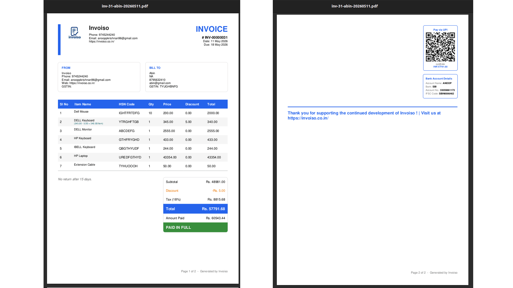

Search for a free GST invoice template download and you'll find hundreds of generic layouts — most built for no business in particular. A freelancer billing a single consulting fee doesn't need the same invoice as a wholesaler shipping forty SKUs on credit, and a retail shop printing a counter receipt doesn't need the same invoice as a service agency itemising a month of work. The template you use should match how your business actually bills, not just look professional. This guide walks through what a GST invoice legally needs, how that changes by business type, and how Invoiso's five built-in templates — Classic, Compact A6, Executive, Minimal and Modern — map to each one.
What every GST invoice needs, regardless of format
Before picking a layout, get the fields right — this is what actually makes an invoice valid, not the design. A GST-compliant tax invoice needs a sequential invoice number and date, your business's legal name, address and GSTIN, the recipient's GSTIN if they're registered, an HSN code for goods or an SAC code for services, a description and quantity of what was supplied, the taxable value, the applicable tax rate and amount split as CGST plus SGST for an in-state sale or IGST for an inter-state sale, and the place of supply. Any template — however it's styled — needs room for all of these. Where templates genuinely differ is how much supporting detail they show around that core: line-item breakdowns, payment terms, bank details, a UPI QR code, or a running due-balance figure.
Freelancers and consultants: keep it to one clean line
Most freelance and consulting invoices bill a single service, or a small handful of milestones, at a flat fee. What matters most here is speed of comprehension for the client and a fast round-trip to payment — not a dense goods breakdown. A single service description, the GSTIN if you're registered, payment terms, and a UPI QR code cover almost every case. If you're under the GST registration threshold or supply exempt services, you'd issue a bill of supply instead of a tax invoice — same clean layout, just without the tax breakup fields.
- Required fields: invoice number, date, service description, GSTIN (if registered), tax breakup or exemption note, payment terms, bank/UPI details.
- Optional but useful: project or milestone reference, due date, late-payment note.
Retailers and shop owners: fast, compact, counter-ready
A retail counter needs an invoice that prints quickly on small paper and lists several items without wasting space — think a kirana store, a boutique, or a hardware shop billing a walk-in customer. HSN codes matter more here since you're moving physical goods across many categories, and the tax breakup needs to be visible per line if items carry different GST rates. Speed matters too: a shop owner doesn't have time to fill a long form for every sale, so a compact layout that's quick to complete and quick to hand over is the right fit.
- Required fields: invoice number, date, HSN codes per item, quantity, rate, per-line and total tax breakup, GSTIN.
- Optional but useful: discount line, round-off, payment mode (cash/UPI/card).

Service providers and agencies: itemise the scope of work
Agencies, contractors and B2B service providers usually bill against a scope of work broken into multiple line items — design, development, consulting hours, materials, or recurring retainer components — often for a higher invoice value than a single freelance line. Clients expect to see exactly what they're paying for, itemised, along with clear payment terms and often a purchase order reference. A denser, more formal layout earns trust here in a way a minimal one-liner doesn't, especially for corporate clients running the invoice through an accounts-payable process.
- Required fields: invoice number, date, itemised line items with SAC codes, GSTIN, tax breakup, place of supply, payment terms.
- Optional but useful: PO/reference number, project name, milestone or period covered, bank details.
Wholesalers and traders: high line-item count, clear GST breakup
Wholesalers and traders move goods in bulk, often across many SKUs on a single invoice, sometimes on credit with due dates rather than immediate payment. The invoice needs to comfortably hold dozens of line items without becoming unreadable, keep HSN codes and tax rates crisp per line since different goods can carry different GST slabs, and show a clear grand total with any round-off. Because trade invoices are frequently inter-state, IGST handling and the place of supply need to be unambiguous.
- Required fields: invoice number, date, HSN codes, per-line tax breakup, GSTIN of both parties, place of supply, credit/due terms.
- Optional but useful: transport/vehicle details, purchase order reference, batch or lot numbers.
GST invoice vs non-GST bill of supply
Not every invoice carries a tax breakup. If you're registered under GST and supplying taxable goods or services, you must issue a tax invoice with GSTIN, HSN/SAC and the CGST/SGST/IGST split. If you're unregistered, dealing only in exempt supplies, or have opted for the composition scheme (which allows a lower flat tax but no input tax credit for the buyer), you issue a bill of supply — same core layout, minus the tax fields, since composition dealers cannot charge GST separately on the invoice. Every one of Invoiso's five templates supports both modes: toggle GST fields on for a tax invoice, or off for a bill of supply, without switching to a different layout. For a deeper look at when each applies, see our GST invoice vs bill of supply guide.
Invoiso's 5 templates, and which business fits which
Invoiso ships five invoice templates, and you can preview any of them against your own data before committing to one:
- Classic — a traditional, all-purpose tax invoice layout. Works well for most small businesses that want a familiar, no-surprises format, including retailers and general trade.
- Compact A6 — a small-format layout built for fast counter printing on narrow paper. The natural fit for retail shops and quick point-of-sale billing.
- Executive — a denser, more formal layout with room for itemised scope of work and additional reference fields. Suited to service agencies, consultants billing larger projects, and B2B invoices that go through a client's accounts-payable review.
- Minimal — a stripped-down, single-focus layout. Ideal for freelancers billing one service line, or any invoice where clarity matters more than density.
- Modern — a contemporary visual style with a cleaner grid, well suited to businesses that want their invoice to also read as a brand touchpoint — design studios, boutique retailers, and service providers who care about presentation.

Wholesalers with high line-item counts generally do best on Classic or Executive, since both hold long item lists cleanly with per-line tax breakup, while a trader billing simpler repeat orders may prefer Compact A6 for speed.
How to choose and customize your template in Invoiso
Open the template selection screen from invoice settings and preview each of the five options against a real invoice — line items, GST fields and totals update live so you can see exactly how your data looks before saving anything. Pick a default template for your business type, then override it per invoice whenever a specific bill needs a different format, for instance a Minimal invoice for a one-off service alongside a Classic default for regular retail sales.
- Open invoice settings and go to the template selection screen.
- Preview each template against your business's own invoice data — items, GST fields, and totals.
- Set a default template that matches how most of your invoices are structured.
- Toggle GST fields on or off depending on whether you're issuing a tax invoice or a bill of supply.
- Add your logo, bank details and UPI QR code in company settings so every template carries them automatically.
- Override per invoice when a specific bill — a large project, a one-off retail sale — needs a different template than your default.
Because Invoiso runs offline on your desktop, every template is available for free with no per-invoice cost or watermark, and your invoice data — customer details, product catalogue, GST numbers — stays on your machine rather than a third-party server.
Common template mistakes to avoid
The most frequent mistake is sticking with whatever template came up first and never revisiting it as the business grows — a freelancer who starts on Minimal but later bills large multi-line projects ends up cramming an itemised scope into a layout that wasn't built to hold it, while a wholesaler using a compact counter-style template for bulk orders runs out of room for line items and has to split one order across two invoices. The fix is simply to match the template to the invoice, not the business as a whole: keep a default for your typical case and switch templates for the outliers.
The second common mistake is leaving GST fields on for a bill of supply, or off for a tax invoice, out of habit rather than checking each customer's status. If you serve both registered and unregistered buyers, or mix taxable and exempt supplies, get in the habit of confirming the GST toggle before you finalise, not after you've already sent the PDF. A third mistake is skipping HSN codes on retail and wholesale invoices because the template doesn't force the field — HSN is mandatory above the applicable turnover threshold, and leaving it blank is one of the easier things to get flagged on during a GST audit.
Download all five GST-ready invoice templates for free with free GST billing software, or download the desktop app to try them against your own invoices.